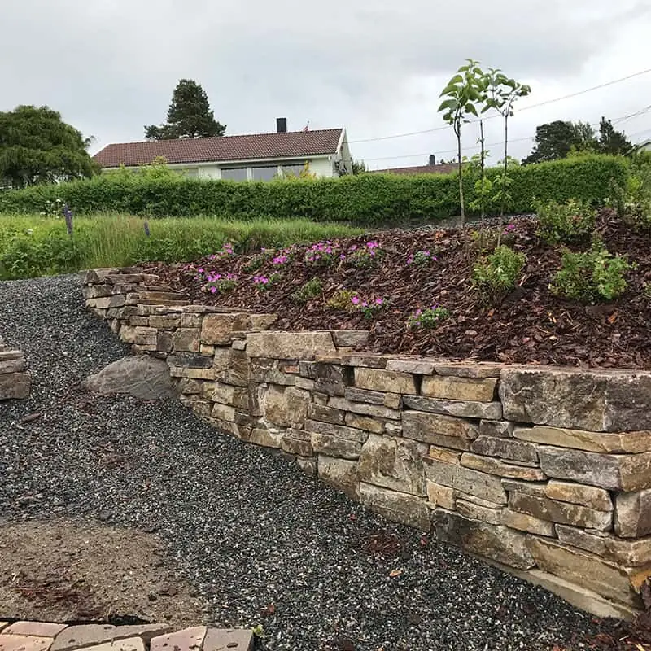

Vi har inspirert til grønne fingre siden 1965
Hagesenter, egen planteskole, anleggsgartner og vintervedlikehold – alt på ett sted på Bergemoen.
Hagesenteret: man–fre 09–16, lør 09–15
Hva skjer i hagen gjennom året?
Sesongen markert med ramme er den vi er inne i nå.
Sortimentet varierer med sesong og vær – ring gjerne før du kommer for noe bestemt.
Planter vokst opp i norsk klima
Siden 1965 har Ødegårdens Planteskole og Utemiljø drevet med produksjon og viderekultivering av planter. Vintergrønne planter kultiveres på planteskolen på Bergemoen, og vi har utvidet kapasiteten med trær i Tovdal.
Planter som er vokst opp i norsk klima og under norske forhold er mer levedyktige enn importerte planter. Ødegårdens Planteskole har vært Gasellebedrift tre år på rad.
Alt for uterommet – hele året
Bark, jord og grus i løsvekt
Fra eget anlegg ved innkjøringen til hagesenteret. Vi hjelper deg gjerne med å lesse, eventuelt kan vi levere. Egen kortterminal og Vipps.

Før & etter
Alle etterbilder er ekte arbeid fra Ødegården. Førbildene er KI-genererte illustrasjoner av hvordan stedet kan ha sett ut før, og er merket.
Spør oss – når som helst
Spør om åpningstider, planter, bark og matjord, snørydding eller anleggsarbeid. Sekretæren stiller de riktige spørsmålene (mål, bilder, adresse og tidsrom) og lager en ferdig e-post til oss.
⚠️ KI er klargjort, men ikke aktivert ennå
Svarene kommer nå fra en regelbasert assistent.
Slik fungerer det
- Still et spørsmål eller trykk «Bestille befaring»
- Svar på noen korte spørsmål
- Trykk «Send på e-post» – alt er ferdig utfylt
📞 Telefon og talesvar med digital sekretær – planlagt, ikke bygget. Ring 37 04 31 02 eller 908 60 707.
Hvordan kan din hage bli?
Last opp et bilde, velg tiltak og se et eksempel fra våre jobber.
Velg tiltak
Eller se et eksempel:
Galleri
Video
KI-animert Klippene er animert med KI fra ekte bilder.
Priser
Alle priser under er EKSEMPEL-plassholdere. Ta kontakt for et konkret tilbud.
| Tjeneste | Enhet | Fra-pris |
|---|
Velkommen innom på Bergemoen
🕘 Hagesenteret – åpningstider
Utenfor sesong og på helligdager: se Facebook-siden vår.
📞 37 04 31 02 eller 908 60 707
✉️ post@odegardens.no
📍 Bergeveien 8, 4886 Grimstad
Ta av fra E-18, kjør mot Vesterled, ta av til Bergemoen og kjør inn til venstre i Bergeveien.
Kart lastes først når du ber om det.
Åpne i kart